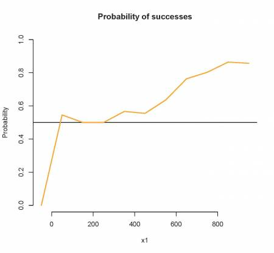
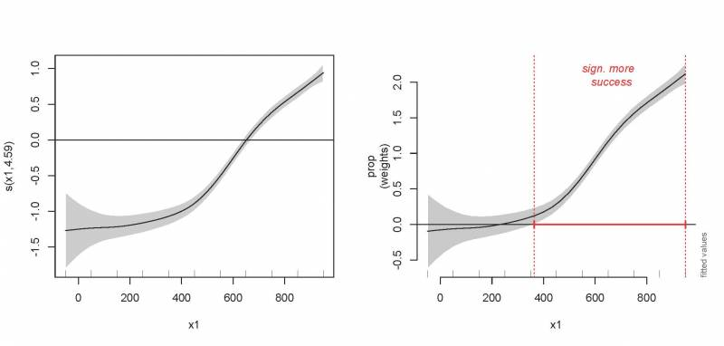
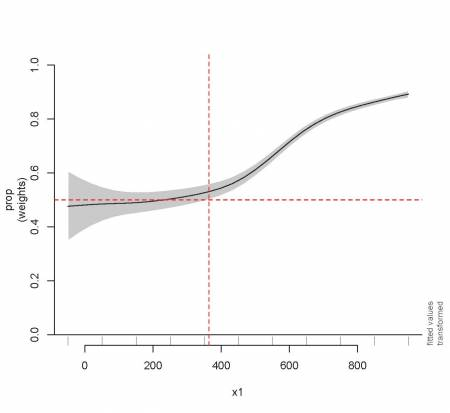

Chapter 11 Other distributions
To provide a brief overview on how to use GAMs when the response variable does not follow a normal distributions and is either count or proportion data (e.g., Gamma, binomial, Poisson, negative binomial), the example that follows uses a dataset where a binomial family distribution is needed and a non-linear relationship with the explanatory variable is evident. Here, the response variable represents the number of successes (event happened) versus failures over the course of an experiment.
'data.frame': 514 obs. of 4 variables:
$ prop : num 1 1 1 1 0 1 1 1 1 1 ...
$ total: int 4 20 20 18 18 18 20 20 20 20 ...
$ x1 : int 550 650 750 850 950 650 750 850 950 550 ...
$ fac : Factor w/ 4 levels "f1","f2","f3",..: 1 1 1 1 1 1 1 1 1 1 ...prop is the response variable, and is equal to the proportion of
successes / (successes + failures). Note that there are numerous cases
where the proportion equals 1 or 0 which indicates that the outcomes
were always successes or failures, respectively, at a given time point
in the experiment.
x1 is the time since the start of experiment (our explanatory
variable).
total represents the number of successes + failures observed at any
time point of the experiment.
fac is a factor coding for trials 1 through 4 of the experiment (we
will not use this variable in this section).
Let’s start by visualizing the data. We are interested in the number of
successes in comparison to failures as x1 increases. We will calculate
the grand averages of the proportions of successes per time bin (x1)
given that there are repeated measures per x1 value (numerous trials and
observations per trial).
emptyPlot(range(gam_data3$x1), c(0, 1), h = 0.5, main = "Probability of successes",
ylab = "Probability", xlab = "x1")
avg <- aggregate(prop ~ x1, data = gam_data3, mean, na.rm = TRUE)
lines(avg$x1, avg$prop, col = "orange", lwd = 2)
As x1 increases, so does the probability of successes. Would you say
that this trend is linear or non-linear? We will test this using a
logistic GAM (we use a binomial family distribution given that our
response is proportion data).
prop_model <- gam(prop ~ s(x1), data = gam_data3, weights = total,
family = "binomial")
prop_summary <- summary(prop_model)
print(prop_summary$p.table)
print(prop_summary$s.table)
plot(prop_model) Estimate Std. Error z value Pr(>|z|)
(Intercept) 1.173978 0.02709613 43.32641 0
edf Ref.df Chi.sq p-value
s(x1) 4.591542 5.615235 798.9407 2.027751e-164What does the intercept represent in this model?
- Recall that the model uses the count outcomes to calculate the logit, which is the log odds ratio between successes and failures:
\[logit = log(\frac{N_{success}}{N_{failures}})\]
- If successes = failures, the ratio is 1 and the logit is 0 (i.e., log(1) = 0).
- If successes have a larger count than failures, the ratio is greater than 1 and the logit has a positive value (e.g., log(2) = 0.69).
- If successes have a smaller count than failures, the ratio is lower than 1 and the logit has a negative value (e.g., log(0.5) = -0.69).
Thus, the intercept is the log odds ratio of successes to failures (logit), and indicates whether on average there are more successes than failures. Here, the estimated intercept coefficient is positive, which means that there are more successes than failures overall.
What does the smooth term indicate?
- This represents how the log odds of successes vs failures changes
over
x1(time in this example). So, we see that since the edf>1, the proportion of successes increases faster over time. If, for example, the response represents the count of species A versus species B and nutrient concentrations are increased over time, these results would indicate that species A is increasingly observed as nutrient concentrations approach its niche optima over the course of the experiment.
11.1 Visualizing the trend over time
Lastly, we will see the different ways this relationship could be represented graphically.
par(mfrow = c(1, 2))
plot(prop_model, select = 1, scale = 0, shade = TRUE)
abline(h = 0)
out <- plot_smooth(prop_model, view = "x1", main = "")
(diff <- find_difference(out$fv$fit, out$fv$CI, xVals = out$fv$x1))
addInterval(0, lowVals = diff$start, highVals = diff$end, col = "red",
lwd = 2)
abline(v = c(diff$start, diff$end), lty = 3, col = "red")
text(mean(c(diff$start, diff$end)), 2.1, "sign. more \n success",
col = "red", font = 3)
What do these plots tell us about successes versus failures?
- Left plot: contribution/ partial effect (if we had more than one explanatory variable). Over time the log odds increases, so over time successes increase and failures decrease.
- Right plot: fitted values, intercept included (summed effect if we
had more than one explanatory variable included in the model). Here
we see that the log odds ratio is estimated around zero at the start
of the experiment; this means there are equal amounts of successes
and failures. Gradually successes increase, and at around
x1= 400 there are significantly more successes than failures (the smooth is significantly different from zero). We also illustrated how we could use the plot to determine at whichx1value this occurs.
Lastly, to help interpret the results, we could transform the summed
effects back to proportions with the function plot_smooth from the
itsadug package:
par(mfrow = c(1, 1))
plot_smooth(prop_model, view = "x1", main = "", transform = plogis,
ylim = c(0, 1))
abline(h = 0.5, v = diff$start, col = "red", lty = 2)
As we already derived from the logit plot, we see that at around x1 = 400
the proportion of successes increases significantly above 0.5.